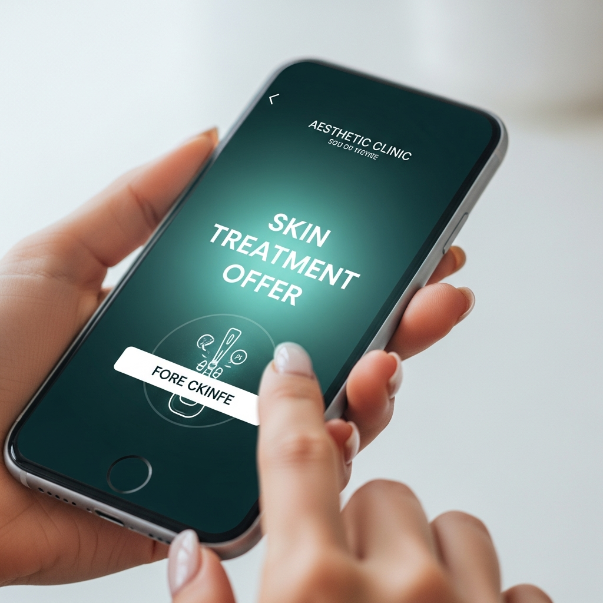

Two doctors Brisbane
should already know.
Let's introduce them.
Prepared for Dr Colin McTari and Dr Ali, SKEEN Clinic, Spring Hill
11 September 2026
By Kelly Wotherspoon & Alicia Hagen

Speed-to-Lead & After Hours
Someone worried about a spot at 9pm deserves an answer at 9pm.
- • A worried person who sends a message and hears nothing books somewhere else, or talks themselves out of it. Every enquiry gets a warm text back within minutes, day or night
- • Instagram and Facebook messages answered after hours: what happens at a skin check, whether a referral is needed, parking, the booking link
- • Anything that needs a doctor is flagged to your team the next morning with the whole conversation captured
- • Nobody on your team answers the same five questions all day. The system does, and it never has a sick day

Your biggest competitive edge
Practitioner Positioning
The doctors who check your skin are the doctors who explain it, treat it, repair it and see you next time. No hand-offs. That continuity is the story, told in AHPRA-safe words on every page, ad and post.

Dr Colin McTari
FOUNDER & MEDICAL DIRECTOR
More than 17 years in skin. Special interest in complex skin cancer surgery and repair, laser and aesthetic medicine. On camera: the one who explains the scan and the surgery so it stops sounding scary.

Dr Ali (Dr Alireza Afrasiabi)
SKIN CANCER DOCTOR & GP · FSCCA, FRACGP
More than 14 years in skin cancer medicine. Special interest in skin checks, flap and graft repairs on the face, nose and ears, and laser for redness and pigment. Sees patients with or without a referral.
Each doctor gets their own page, their own film series and their own booking link. The portraits on this slide are from your current website; new ones shot on the film days replace them.
What we actually do
What You Never
Have to Touch
So you can go back to being the doctors.
The only job left is the one you trained for.

How it works
Our Campaign Process
Your potential new client sees your ad on Facebook or Instagram, leaves their details, and from there everything runs itself.

Campaign
A warm, doctor-led ad reaches the woman across Brisbane who has been meaning to book a skin check for months

Into CRM
They take the skin check-in. Name, mobile and what brings them in, captured and tagged

5-Day Follow Up
Automated SMS, email and call sequences if they do not book straight away

Booked
Their skin check is booked in HotDoc, and often their family's too. You walk in and the patient is there
While we run it
We Run It. You See the Patients.
None of this lands on your desk. Our team sets it up, watches it and adjusts it every week, so enquiries get answered, bookings get followed up and checks get recalled without anyone at SKEEN copying and pasting.
See what happens behind the scenes →

Leads Booked
New enquiries captured, answered, followed up and booked into HotDoc, without anyone chasing them

Patients Recalled
Reminders when each skin check is due, scar care follow-ups, skin confidence education and reviews, on autopilot

Emails & DMs Handled
Referral, parking, what to expect: answered instantly, so your team can look after the people in the room

After-Hours Covered
Enquiries handled outside clinic hours, so a worried person never waits overnight for a reply
What we need from you
The Short List of Things We Need
This is a bespoke build, so the work sits with us. Four things only ever need to come from you.

Show Up on Camera
The film days in week one. We script it with you first, then film until it sounds like you talking. Brisbane wants to meet the two of you before they book.

Deliver the Experience
The system gets your new patient through the door. The way you explain things in the room turns a first check into a patient, and a family, for years.

Keep the Welcome Warm
Your Spring Hill fitout already feels calm and inviting. We show it off online; the front desk carries that feeling through on every call.

Book the Next Check
Every visit ends with the next check booked, for your patient and for the family they look after. That is where the recurring bookings live.